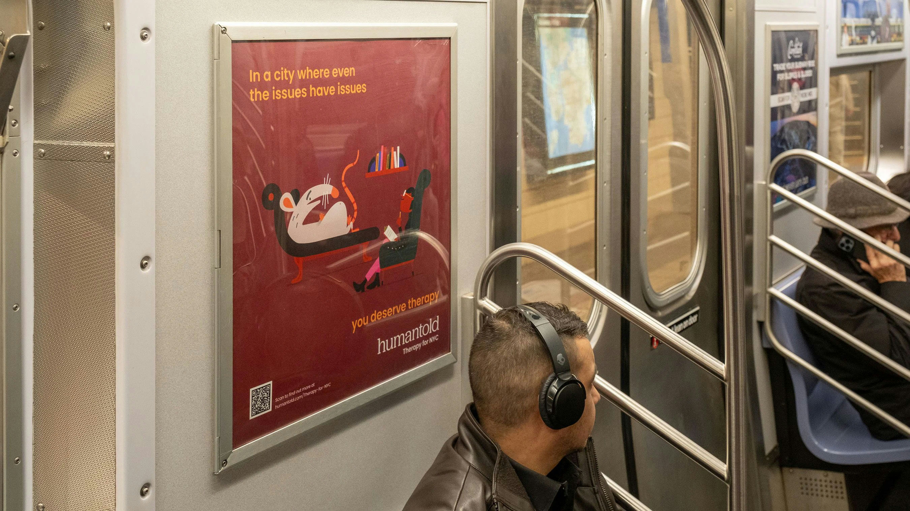
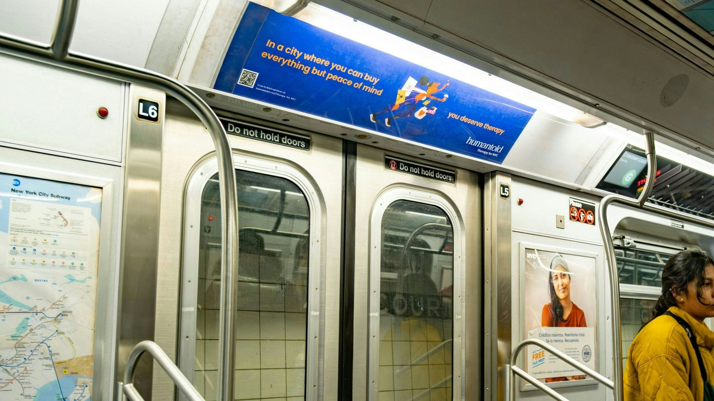
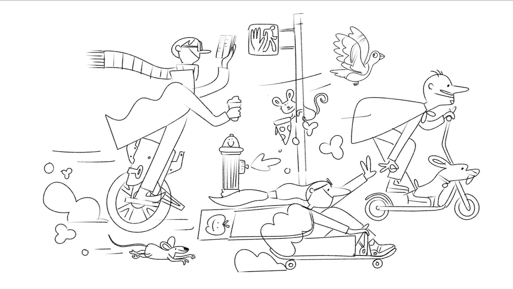
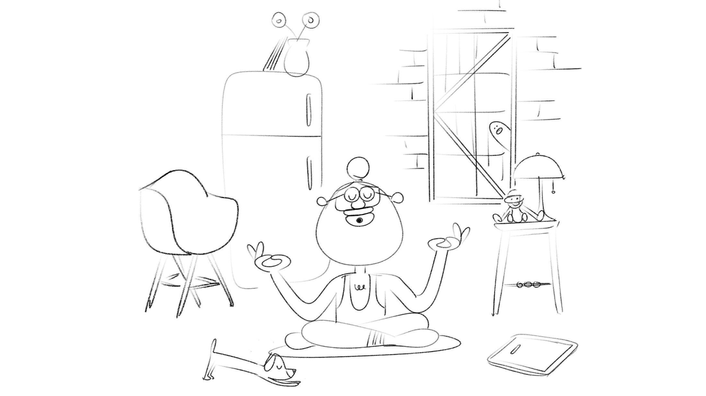
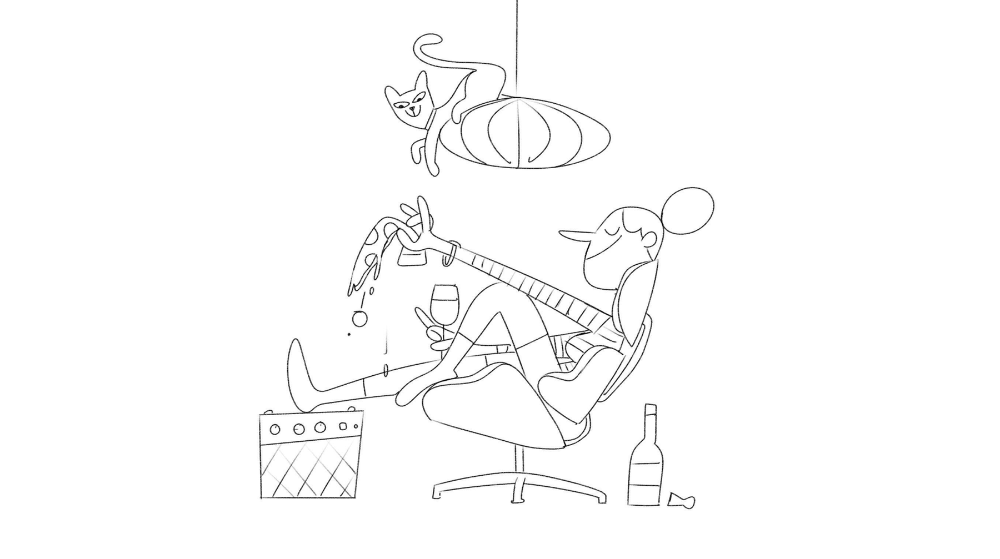
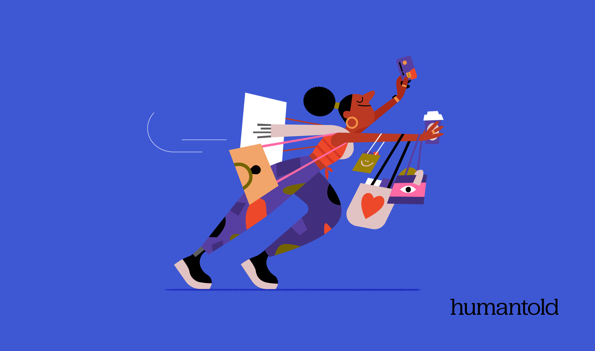
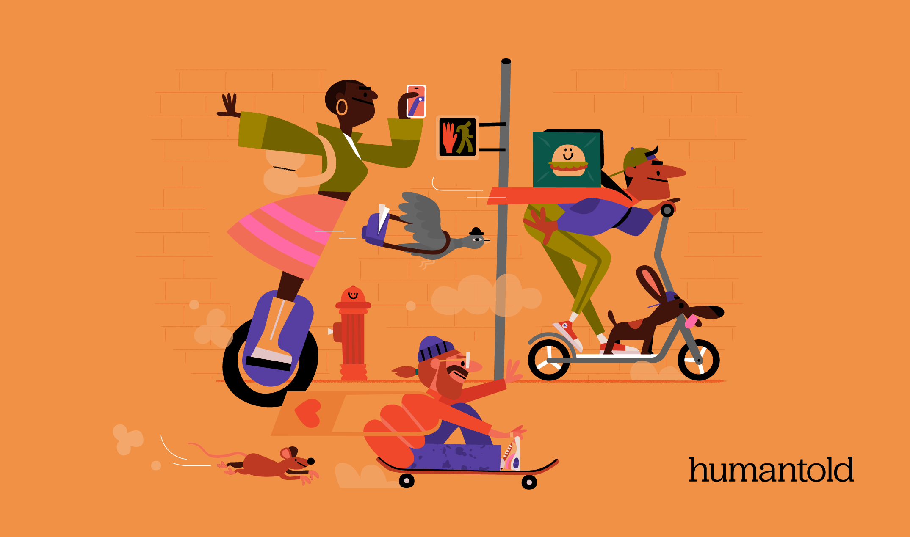

Making therapy
feel reachable
Humantold wanted warmth, and they wanted humour.
The campaign was about the things that wear you down in a city: not the big subjects you associate with therapy, but the small, grinding ones. The roadworks going off outside your window. The stuff that feels too minor to mention and gets to you anyway.


They came with a few scenarios already in mind, and we built the rest out together.
The roadworkers were theirs. From there we explored ideas that would work as illustrations and carry the message hard enough to land on a wall someone walks past in a hurry. Each idea had to pass the same test: did it work visually, and did it hit. The ones that made it did both.
Nothing went straight through. Two rounds on the sketches, two on the illustrations, two on the motion, so the final frames are the version that survived the most argument.



“The whole point was the small stuff. Not the things you’d book a therapist for: the roadworks at 7am.”


The work ran across the subway for a few months, the characters sitting where people actually stop: on the platform, between trains. The animated cuts circulated online. Animation was shared between Alex and Jelly KITCHEN.